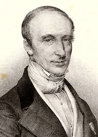

Što će ispisati sljedeći kod? int x, y; x=3; y=x++-2; printf ("%d %d", y, x); 1 4 2 4 3 1
Koliko je poteza potrebno za premjestiti 5 diskova u igri Hanoiskih tornjeva? 24 30 31
Čovjek je poput razlomka čiji je brojnik ono što jest, a nazivnik ono što misli o sebi. Što je nazivnik veći, razlomak je manji... rekao je: Lav Nikolajevič Tolstoj Galileo Galilei Fjodor Mihajlovič Dostojevski
Čovjek je poput razlomka čiji je brojnik ono što jest, a nazivnik ono što misli o sebi. Što je nazivnik veći, razlomak je manji...
Koja je deseta decimalna znamenka broja Π? 5 4 9
Kako definiramo neprebrojiv skup? Skup x je neprebrojiv ako nije prebrojiv. Skup x je neprebrojiv ako je beskonačan i nije prebrojiv. Skup x je neprebrojiv ako nije konacan.
Koliko vrhova ima ikosaedar?
Σ je koje slovo grčkog alfabeta?
Koji broj je sljedeći u nizu 25,24,22,19,15?
Tko je smislio hipotezu Svaki se parni prirodni broj veći od 2, može prikazati kao zbroj dva prosta broja!?
Svaki se parni prirodni broj veći od 2, može prikazati kao zbroj dva prosta broja!
Kako se zove matematičar sa slike? 
REZULTAT